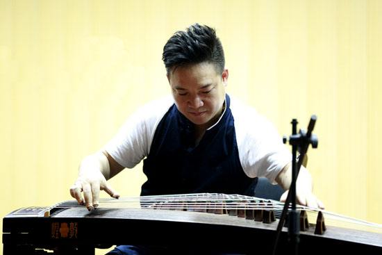
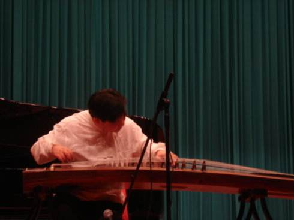
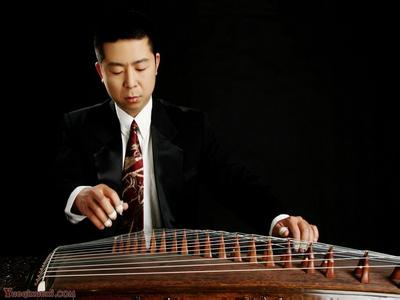
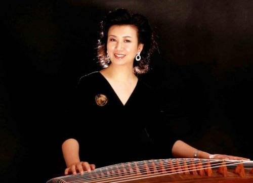
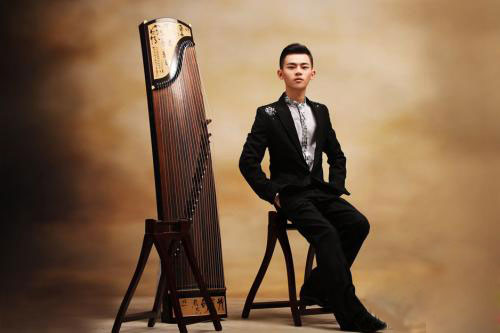

- 名筝天下——古筝
- 名筝天下——名人
名筝天下
中国古筝是一件极具中华民族特色、历史悠久、音色优美、长于表达深沉广博音乐感情的乐器。自秦、汉以来，古筝从我国西北地区逐渐流传到全国各地，并与当地戏曲、说唱和民间音乐相融汇，形成了各种具有浓郁地方风格的流派。现今中国古筝的各个流派主要有以下几个：山东筝派、河南筝派、陕西筝派、浙江筝派、潮州筝派、客家筝派、福建筝派、内蒙筝派和朝鲜筝派。
传统的山东筝派、河南筝派、浙江筝派、潮州筝派和客家筝派在中国民间流传较为广泛，有深厚的群众基础。有些流派由于地域或语言的相近，在音乐上的交流比较频繁。它们之间相互影响，却又独立存在，有同有异，自成各具风格的流派。
河南古筝是由秦筝传入河南和当地民间音乐融合发展成为后世有名的中州古调。在付玄《筝附?序》中对河南筝曲的评价是“曲高和寡，妙技难工” ，以深沉内在慷慨激昂为其特色。20世纪20年代，遂平的魏子猷最早把河南古筝介绍出去，并传有《小开手》、《关雎》、《 天下大同》、《渔舟唱晚》等十余首乐曲。其学生有娄树华、梁再平、周希文、史荫美、程午加等。近几十年，河南筝派的代表人物有曹东扶、王省吾、任清志等。
山东古筝多和山东琴书、民间音乐有直接联系。曲子多为宫调式，以八板编组而成。其演奏风格纯朴古雅，非常具有浓郁的山东地方特色。其代表人物有黎邦荣、张为昭、张念胜、黎连俊、樊西雨、王殿玉、赵玉斋、高自成、韩庭贵等。该筝派代表曲目有：《汉宫秋月》、《四段锦》、《天下同》、《美女思乡》等。
潮州古筝主要流传于广东潮州一带，受闽南语系影响，形成独特的轻六、重六、活五等曲调。乐曲丰富独具一格。其代表人物有郭鹰，苏文贤、林毛根等。代表曲目有《寒鸦戏水》、《秋思曲》等。
客家派古筝流传于广东梅县，大浦等客家地区，历史源远流长。广东客家音乐亦称汉乐，受当地风格及方言影响而形了典雅文静，秀丽委婉的风格。罗九香先生是近代客家筝曲的代表人物，他继承和发展了其师何玉斋先生的演奏，经过多年的演奏和教学实践，形成了自己的演奏风格。至今活跃在客家筝曲研究、教学、演奏等领域中的许多名家：史兆元、何宝泉、陈安华等大师都在不同程度上受到了他的影响。代表曲目有《出水莲》、《蕉窗夜雨》等。
浙江筝派流行在杭州一带。其乐曲以移植琵琶曲为多，抒情性，戏剧性很强。演奏时，传统浙江筝派左手的揉、吟、滑、按技法较简单，只是对旋律做一些修饰，演奏时恰到好处，并不夸张。其代表人物有王巽之、项斯华、范尚娥等。代表曲目有《高山流水》、《将军令》等。
陕西筝派是近年来复兴起来的流派，它的乐曲有的来源于陕西榆林流传下来的小曲；有的是根据西安鼓乐古谱编订的乐曲；还有很大一部分乐曲是根据秦腔、眉户改编创作的现代作品。陕西筝曲涉及的戏种、乐种繁多复杂，既有秦腔音乐那大起大落、激昂慷慨“英雄曲”之悲壮气势；又有眉户、碗碗腔音乐那如泣如诉、细雨缠绵、委婉酸楚的“凄凉调”。
福建筝派是20世纪七十年代才挖掘出来的，很少流传。它的部分乐曲和音乐与潮州、客家筝音乐风格相近，也有同曲异名的属于南方筝派。乐曲大多平稳、缓慢。
内蒙筝只有10弦，多半用来为民歌和牧歌伴奏。
虽然，中国古筝各流派的形成与流传地域、历史、传人、乐谱、技法、曲目及风格等诸多因素有关，但是，从演奏技术的角度来看，这些流派的流传和发展都和传人富有个性的演奏有极大的关系。在同一个流派中，同一首乐曲往往会有许多名家演奏的不同版本。这里显示了传人不同的传承背景，也表现了传人各自的演奏特点和对乐曲艺术见解的不同认识与理解。传人们是在前人经验的基础上广采众长，并依据各地方言和习俗，融汇了各地民间说唱和器乐音乐，并经过长期的演奏实践，创造、发展，从而逐渐形成了自己的演奏风格。
我们在学习传统流派的曲目时，常常会碰到一个曲目同时会有很多不同版本的乐谱。有时侯，人们会误以为没有听说过或跟自己所学版本不同的曲目就是错误的。实际上，学习传统筝派，从众多传人的整体上去了解和研究，是十分必要的。学习者不但可以从多方面、多角度地去理解不同传人的不同造句方法、不同变奏手法、不同技巧处理，还可以从大的方面去了解和把握流派的精神和风格。同时，不同审美、不同爱好的人也可以根据需要去选择自己喜爱的版本。
古筝名家大全—排名不分先后
导读: 随着人们越来越注重艺术文化的发展，越来越多的人去学习乐器，而古筝已经成为非常普遍的一种乐器，越来越多的人开始学习古筝，我们都知道，学习一件乐器并不难，难的是把一件乐器学好，学精。在古筝界有很多的名人，我们一起来看看有哪些老师吧。

王中山 男 中国音乐家协会古筝学会秘书长
何宝泉 男 上海音乐学院教授，东方筝会会长
李萌 女 中央音乐学院教授
赵曼琴 男 古筝教育家、原河南省中州古筝学会会长
曹东扶 男 河南筝派杰出代表和奠基人
王巽之 男 著名古筝演奏家、浙江筝派代表人物
罗九香 男 著名客家筝大师
娄树华 男 著名古筝演奏家、一代古筝宗师
高自成 男 著名古筝教育家、演奏家、山东派代表人物
曹正 男 著名古筝教育家、理论家、演奏家、一代古筝宗

张汉斋 男 潮州音乐大师，潮州音乐大师，中国音乐家协会会员
赵玉斋 男 著名古筝教育家、演奏家、原沈阳音乐学院教授，东北古筝学会会长
苏文贤 男 潮乐名家
梁在平 男 著名古筝家
林毛根 男 著名古筝艺术家，潮州筝派代表人之一
郭鹰 男 著名古筝教育家、潮州派代表人物
李婉芬 女 著名古筝教育家、演奏家、中国音乐学院教授
周延甲 男 原西安音乐学院教授，陕西秦筝学会会长
赵登山 男 著名演奏家、作曲家、教育家，中国音乐家协会会员，中国音协古筝学会副会长

曹桂芬 女 著名古筝演奏家，系中国音乐家协会会员
项斯华 女 当代中国筝乐大师
邱大成 男 中国音乐学院器乐系副主任、副教授，也是中国音乐家协会会员
任清志 男 古筝大师河南筝派的代表人之一
黎邦荣 男 古筝大师现在所知最早的荷泽地区山东筝的传人
高哲睿 男 古筝大师潮州筝名家
范上娥 女 中央音乐学院课座副教授,国家一级演奏员
魏军 男 古筝演奏家、教育家、陕西秦筝学会创建人之一

韩庭贵 男 古筝艺术家，山东筝派代表人之一
史兆元 男 客家筝派传人，中国音乐学院讲师
饶宁新 男 星海音乐学院副教授，客家筝派代表人之一
娜仁格日勒 女 内蒙古艺术学院教授，蒙古筝"雅托嘎"传人之一
扎木苏 男 内蒙筝代表著名雅托噶（蒙古筝）艺人，内蒙筝代表人物之一
周望 女 中央音乐学院副教授
杨娜妮 女 沈阳音乐学院教授
阎俐 女 沈阳音乐学院教授
曲云 女 陕西师范大学教授
王小月 女 天津音乐学院副教授
阎爱华 女 南京艺术学院副教授、中国音协会员、古筝学会理事
李贤德 女 上海筝会副会长
潘妙兴 男 上海筝会会长
庄辰 男 大连古筝学会会长

林玲 女 中国音乐学院副教授
郭雪君 女 上海音乐学院副教授
孙文妍 女 上海音乐学院副教授
赵毅 男 武汉音乐学院副教授
王蔚 女 上海音乐学院副教授
王昌元 女 旅美华裔浙派筝传人
陈安华 男 广东星海音乐学院教授
吴青 女 武汉音乐学院副教授
刘巧君 女 河北艺术学校教授
许菱子 女 中国音乐家协会会员、北京古筝研究会会员、中国民族管弦乐协会会员
袁莎 女 现任教于中央音乐学院
罗小慈 女 上海音乐家协会会员，上海音乐家协会古筝专业委员会常务理事
李炜 男 著名中国古筝演奏家、作曲家
傅明鉴 男 古筝演奏,筝乐作曲,筝学研究,筝艺教育家
李汴 女 中国煤矿文工团筝独奏演员，古筝演奏家，中国音乐家协会会员
杨秀明 男 中国著名的古筝演奏家
童宜风 男 中国音乐家协会、中国曲艺家协会、北京古筝研究会等会员
温福泽 男 著名古筝名家、教育家、重庆筝协会员
Copyright © 2018. 信息工程学院2016级计算机科学与技术